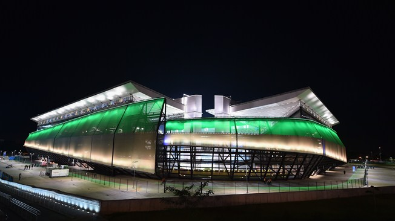

World Cup News
The biggest scoreline in the history of the FIFA World Cup qualifiers - and indeed in the history of international football - was recorded on 11 April 2001, when Australia beat American Samoa 31-0.
This legendary match also brought global renown for Archie Thompson, whose 13-goal hault set a new world record, which stands tho this day, for an individual player in a single international match.
And though the defeat earned American Samoa ignominy, so inspiring has their subsequent recovery been that is now the subject of an acclaimed documentary, 'Next Goal Wins', showing across the world.
Destinations
-
 BELO HORIZONTE, STADIUM: Estadio Mineairo
BELO HORIZONTE, STADIUM: Estadio Mineairo
-
 BRASILIA, STADIUM: Estadio Nacional
BRASILIA, STADIUM: Estadio Nacional
-  CUIABA, STADIUM: Arena Pantanal